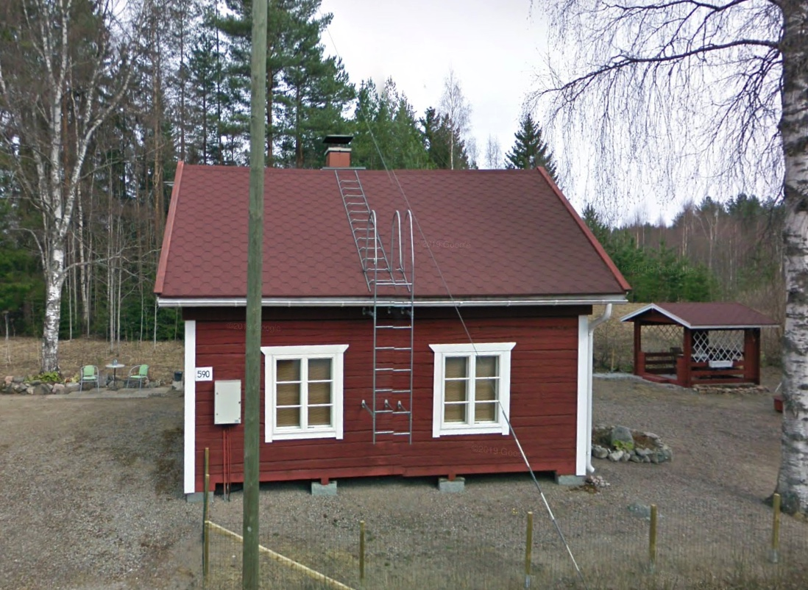

Vuokrattava mökki
Mökki sijaitsee Miekankoskentie 406:ssa. Punainen hirsimökki on kooltaan n50 neliötä. Mökiltä rantaan on n. 500m. Näin ollen mökki on turvallinen myös pienten lasten kanssa. Mökki soveltuu parhaiten 4 hengen seurueelle. Mökin varusteisiin kuuluu täydellinen keittiö, sauna sekä parvi. Mökki on sähkölämmitteinen, mutta siellä on myös takka sekä televisio kaikilla kanavilla.
